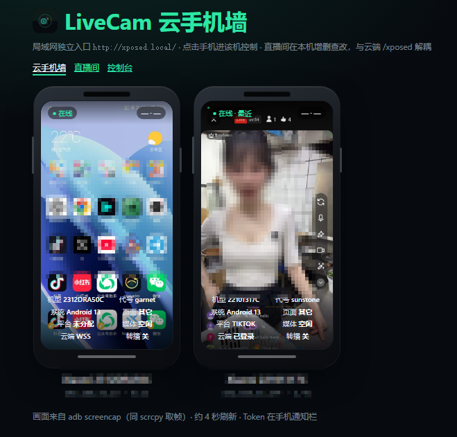
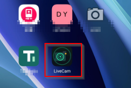
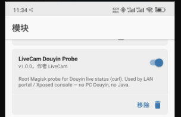
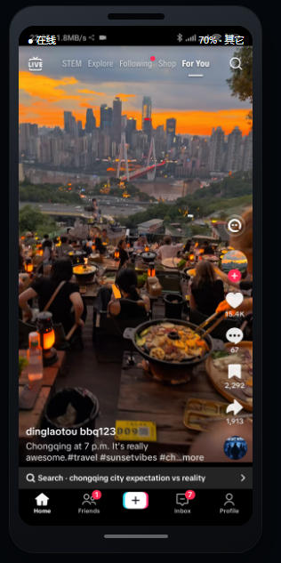
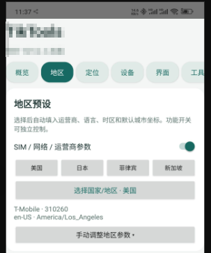
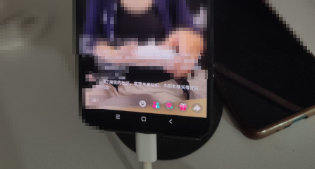

直播: xposed模块 (livecam)
虚拟相机

换做以前,总是在海鲜市场,测试各种虚拟相机模块
效果就是替换手机本身的摄像头画面/麦克风音频
方式有很多:固定视频素材,电脑OBS推流,或者直接转播直播源
模块大多都需要已经解锁bl,已root的安卓手机
但是往往平台都能检测到,比如tiktok会红色弹窗警告,降权,封号
因为AI一直在进化,vibe coding就跟吃饭喝水一样,已经成为日常
所以让它直接开发一个xposed模块

实际测试tiktok/Youtube/某音都可以实时推流直播
没有弹窗警告
然后再增加magisk模块辅助

可以解决依赖PC/云服务器的问题,实现完全独立检测/解析/拉流
以往使用云手机成本高
使用xposed模块,二手安卓机成本就可以矩阵工作室
但,能不能稳定不被平台检测,难说呢
机型配置 (gps/ip)

运行Tiktok app,需要解决很多问题,比如针对大陆的SMI手机卡,进行锁卡, 静态住宅ip,系统时间/语言,手机型号,GPS定位等等
以前的方案很杂乱,比如用nrfr解决锁卡,爱玩机工具箱解决机型,fake location解决gps定位
其中,ip/定位是决定获利的基本前提,其他都只是让普通人观看(奶头乐消遣)而已
借助于xposed模块,可以把这些功能都融合在一起,解决环境/推流2大核心问题

Tiktok直播

如果你想稳定的获取收益,youtube的Ypp是比较好的选择
广告赚美金,覆盖了长视频/短视频/直播三种形式
分成比例高,国内储蓄卡就可以收款结汇
平台的推荐,持续稳定,长视频一旦爆款,天花板高,1个视频收益能顶1年的国内牛马劳动
而Tiktok,就是快,不适合沉淀
xposed的模块开发参考资料,后台私信: live
至于livecam模块本身,我会放在群里,后台私信: 加群
一键三连: 关注/点赞/推荐